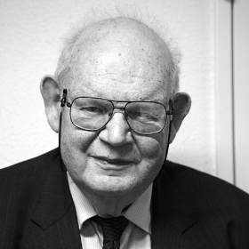

PhD encounters · interactive models
The Mandelbrot set


On 1 March 1980, at IBM's research centre north of New York, Benoit Mandelbrot got a computer to answer a simple question about a simple rule. Start at zero, square the number, add a constant c, and repeat. For which values of c does the result stay small forever, and for which does it run off to infinity? The constant is a complex number, a point on a plane, so the answer is a picture.
znext = z² + cz starts at 0, and c is a point on the plane
The picture was a heart with a disc attached, surrounded by smaller copies of itself, with more detail at every magnification. Pierre Fatou and Gaston Julia had studied these iterations in the 1910s without being able to see them, and Robert Brooks and Peter Matelski had printed a rough version in 1978. The rule is Robert May's logistic map in another form, taken from ordinary numbers to complex ones. Along the horizontal axis of the picture lies the whole period-doubling story.
The plane of c. Horizontal: real part. Vertical: imaginary part. Click or tap anywhere to choose a point. A click close to the horizontal axis lands exactly on it.
The first 60 steps for the chosen c. Vertical: the size of z, its distance from zero. Once it passes 2 it never comes back.
What the values mean
- c · the constant
- The number added at every step. It is complex: a real part, read on the horizontal axis, and an imaginary part, read on the vertical axis. Every point of the picture is one value of c.
- z · the running value
- The number that is squared again and again. It always starts at 0 and it is also complex. Squaring a complex number squares its distance from zero and doubles its angle.
- The set
- All the values of c for which z stays small forever. Mandelbrot at first thought the small islands were separate. Adrien Douady and John Hubbard, who named the set after him, proved that it is all one piece, joined by threads too thin to show.
- Outside the set
- Values of c for which z runs off to infinity. The shade shows how many steps that took. The darkest blue hugs the boundary, where z hesitates longest.
- Chosen point
- The value of c that the readouts and the bottom chart describe.
- What z does
- Whether z settles on one value, repeats in a cycle, stays small without ever repeating, or escapes, checked over tens of thousands of steps. Each bud of the set has its own cycle length.
- Same point in May's map
- On the horizontal axis the rule is the logistic map in disguise, with c = r · (2 − r) / 4. The readout gives the r that matches your c.
- Magnification
- How much the view is enlarged compared with the whole set. More steps are computed as you zoom, and the picture stays as intricate as before.
- Bottom chart
- The distance of z from zero at each step. The dashed line at 2 is the point of no return.
| c on the axis | May's r | What sits there |
|---|---|---|
| 0.25 | 1 | The notch of the heart. Inside the heart z settles on one value. |
| −0.75 | 3 | The heart meets the disc. First period doubling: one value becomes two. |
| −1.25 | 3.449 | The disc meets a smaller one. Two values become four. |
| −1.401 | 3.570 | The discs have shrunk to nothing and the needle begins. Chaos. |
| −1.75 | 3.828 | A small copy of the whole set sits on the needle. This is the period-3 window. |
| −2 | 4 | The tip of the needle, and the end of the logistic map. |
Source: B. B. Mandelbrot, “Fractal aspects of the iteration of z → λz(1 − z) for complex λ and z”, Annals of the New York Academy of Sciences 357, 249–259 (1980). The picture is computed in your browser, with more steps per point as you zoom in. The code in this repository was generated with Claude (Anthropic).